Pour chaque lieu : la présentation pour le gérant, l'app pour ses clients et son site web, dans la DA de son Instagram.
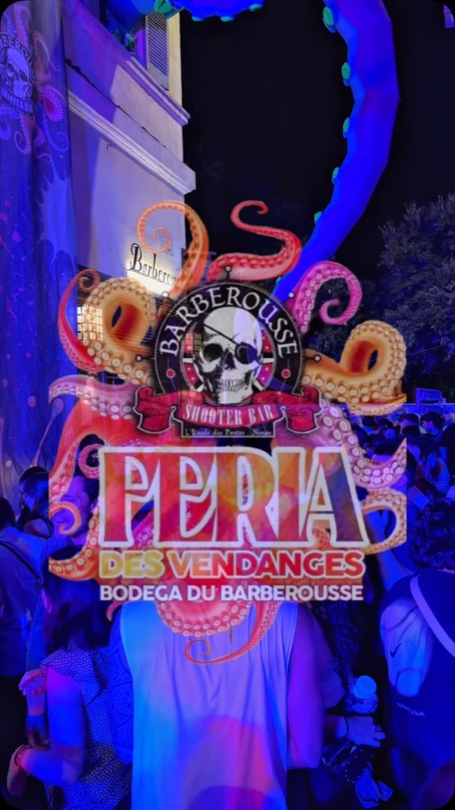
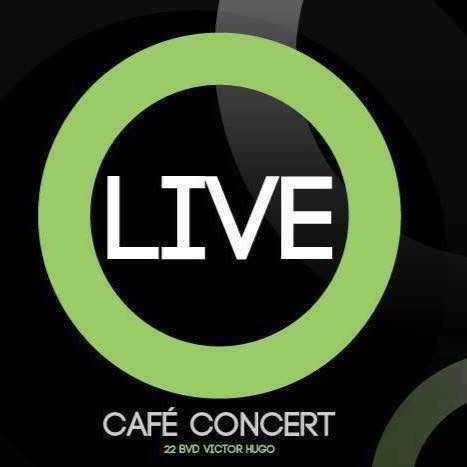
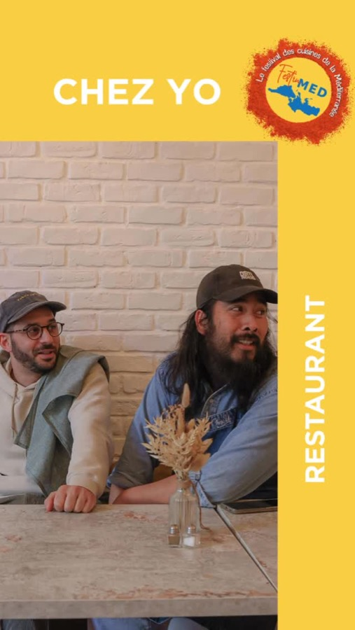
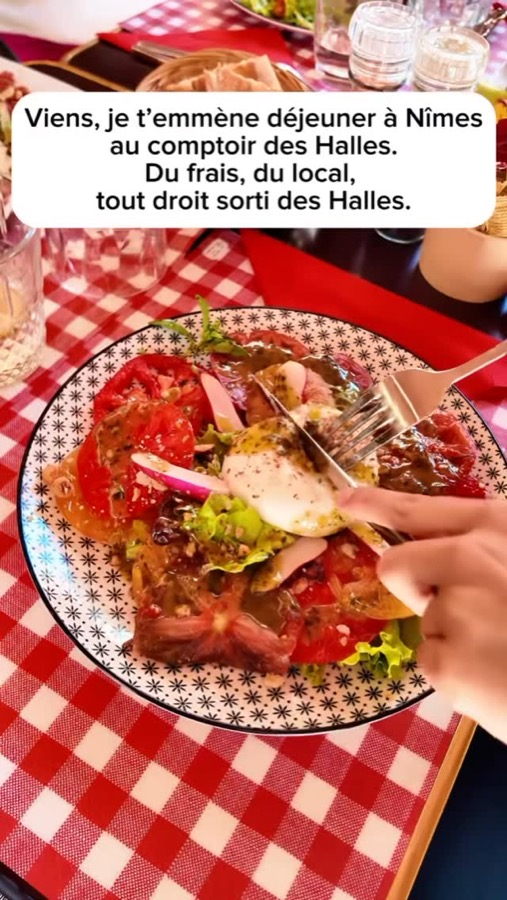
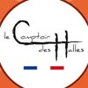
Le Comptoir des HallesBrasserie française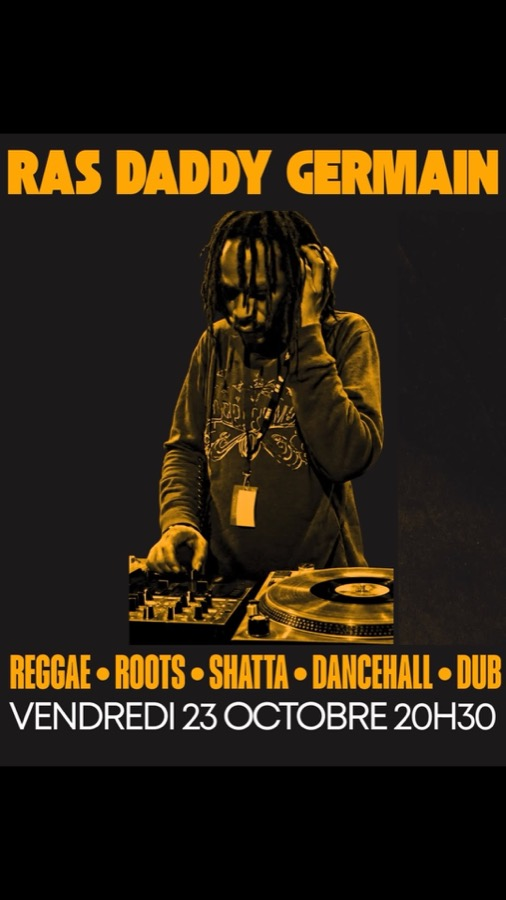
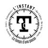
L'Instant TBar à bières · Concerts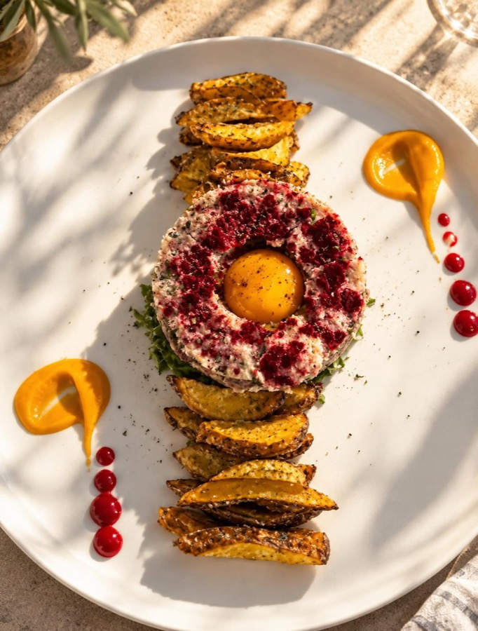
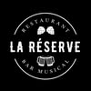
La RéserveRestaurant · Bar musical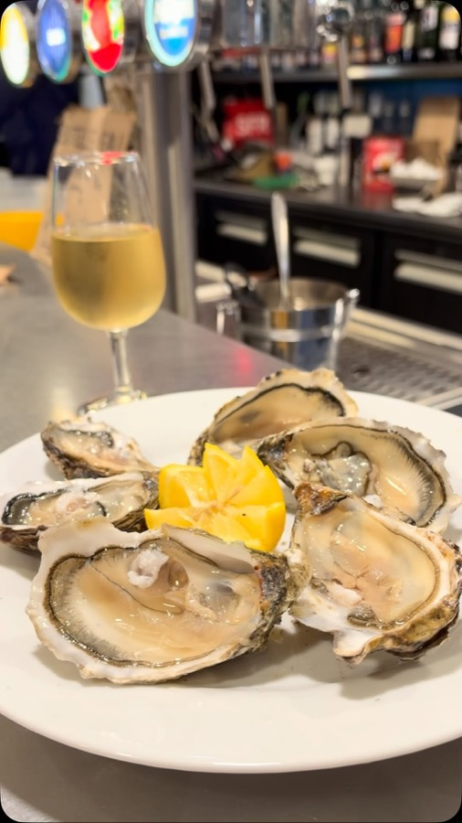
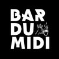
Le Bar du MidiBar · Salle d'expo et de concerts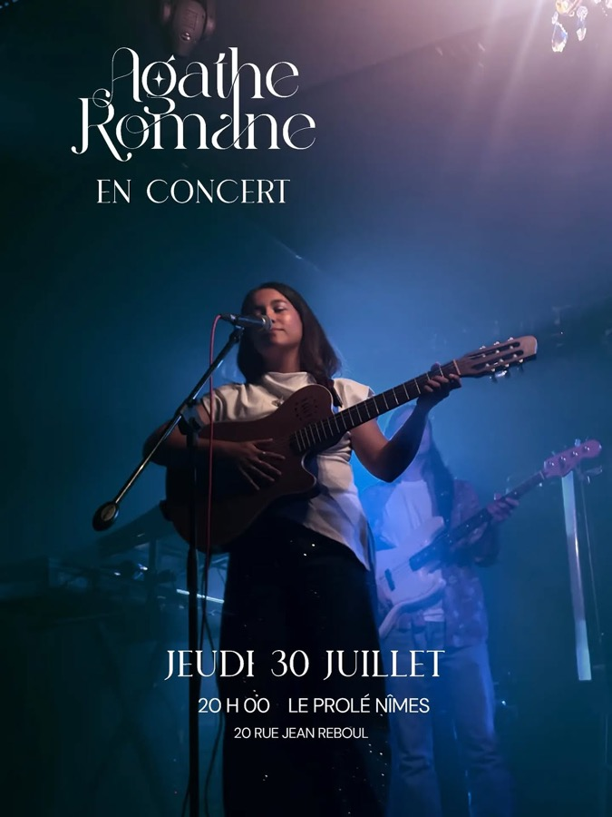
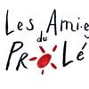
Le ProléBar coopératif et culturel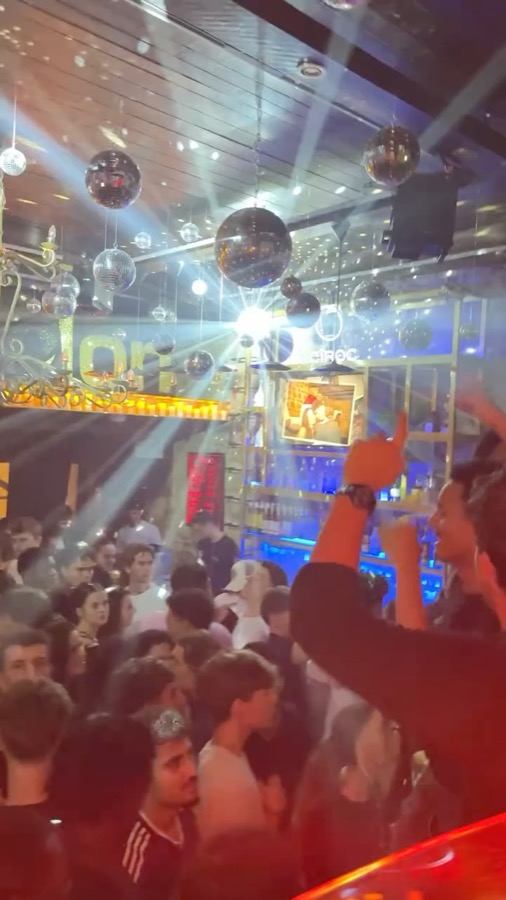
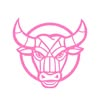
Le Victor HugoBar musical festif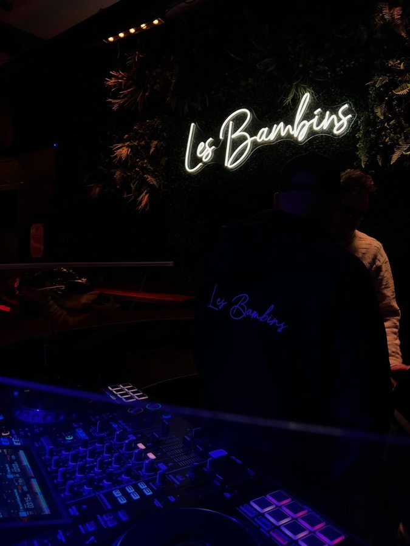
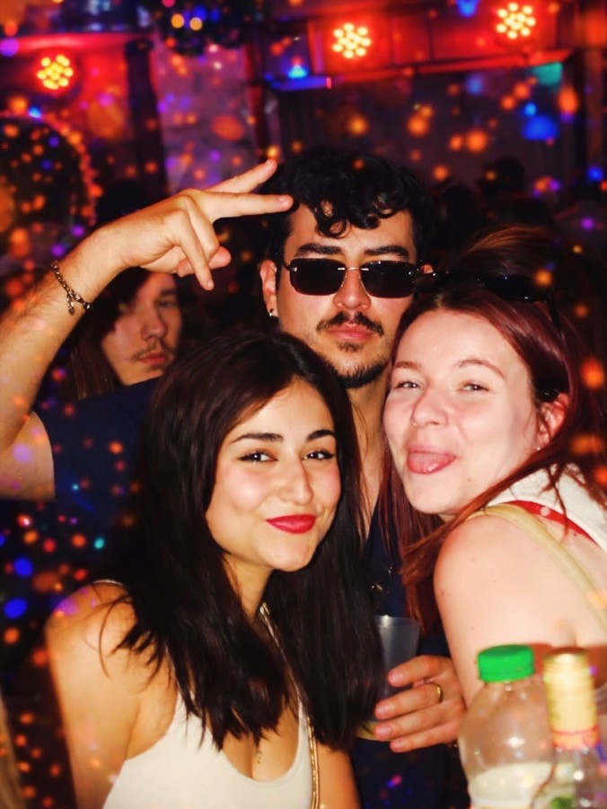
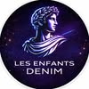
Les Enfants DenîmBar · Cave · Restaurant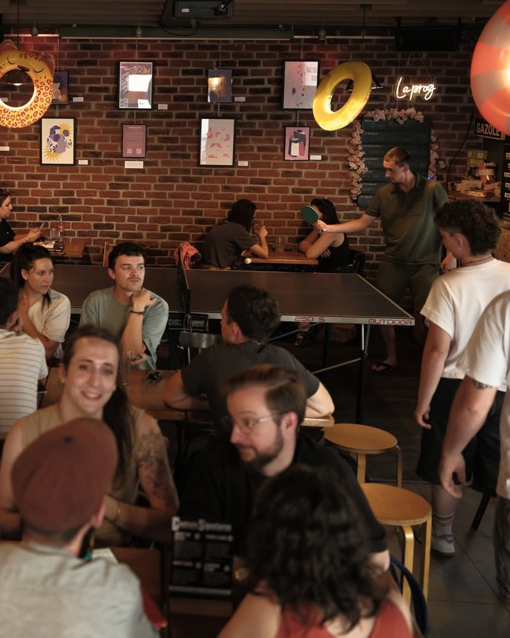
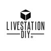
Livestation DIYBar · Restau · Événements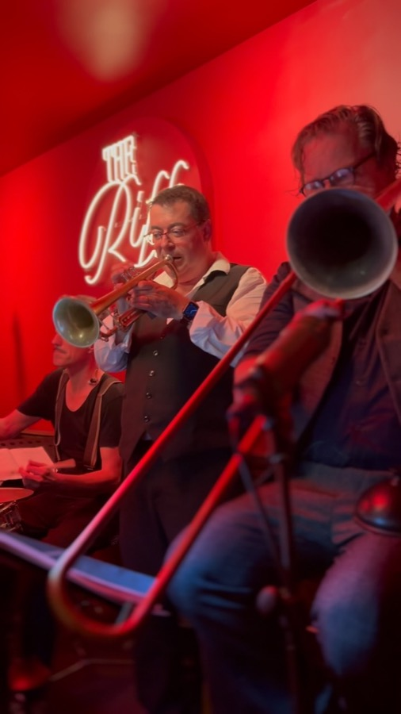
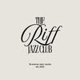
The Riff Jazz ClubJazz club